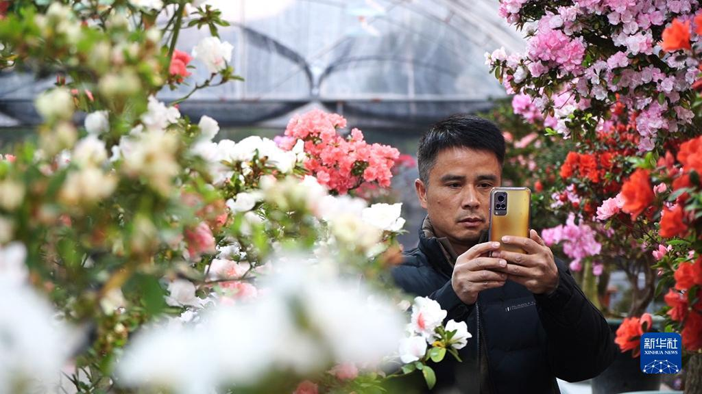

新华社福州4月1日电 题：花卉集镇“新农人”：在故乡热土打造“美丽产业”
新华社记者周义、吴剑锋
曾几何时，走出乡村是一代人逐梦的起点。但在福建龙岩漳平市永福镇，一批“新农人”带着新思想、新技术、新农具，扎根大山，在故乡热土尽情施展才华。
农民专家：创办花卉研究所
永福镇平均海拔780米，年平均气温17.3摄氏度，几乎家家户户都种花。
“永福被誉为‘中国杜鹃花之乡’，杜鹃花种植面积达5.5万亩，盆栽杜鹃花占全国市场份额的70%以上。”永福镇副镇长王秋鹏说。
陈子望是当地最早种植杜鹃的花农之一，但本土杜鹃繁殖难、生长慢，所以国外进口的杜鹃品种长期广受欢迎。作为土生土长的永福镇人，陈子望看到本土杜鹃逐渐销声匿迹，急在心里。
为解决这一问题，陈子望召集村里懂技术的骨干，带头创办了花卉研究所，专攻杜鹃的栽培技术和品种研发。陈子望试验了土质的类型、水分等多种要素，并引进国外品种与本土品种进行杂交，选育出新品种，实现了露天栽培向盆景栽培的转变。
“以前杜鹃作为工程苗，一棵苗卖几块钱到十几块钱不等。如今，永福镇有上千个杜鹃品种，把盆景工艺结合到花卉的形态上，使永福杜鹃从简单的农产品变成工艺品，价格翻了好几番。”陈子望说。
创新无止境，陈子望还带领科研人员综合应用花期调控技术，实现了“永福杜鹃四季开”的目标。
创业青年：打造家庭“后花园”
这个春天，永福镇鸿浩园“出了圈”，引来一批又一批的游客，村民称其为“后花园”。记者走进这里，只见木凉亭居水而建，颜色各异的杜鹃花装点其中，宛如世外桃源。

3月16日，游客在永福镇观赏杜鹃花。新华社发（肖和勇 摄）
多年前，这里是一片荒芜之地，返乡创业青年黄艳的到来使其发生了巨大变化。
“我大学学的是园林设计，正好家乡在发展花卉产业，就想利用自己的专业知识打造一个与众不同的乡村花园景观。”永福镇鸿浩园负责人黄艳说。
如何选取花的摆放位置、颜色、造型？如何把它们融入生活环境中？如何让人为景观体现自然山水的意境？带着这些问题，黄艳还专门回校请教了自己的导师。
“整个花园有十几亩地，七八百个品种的杜鹃。”如何让花园产生经济效益，黄艳自有一套生意经。她说，自己不只卖花，还卖配套服务，会根据顾客的家居风格和布局提供设计方案，上门为其打造家庭“后花园”。
赋予花卉更高的审美价值，把园林设计作为核心竞争力，黄艳的想法符合当下大众对生活品质的追求，她也因此获得成功。“一年销售额可达30多万元，现在基本上忙不过来。”黄艳说，未来她打算推广这种经营模式，让花卉经营更上一层楼。
乡村网红：带领农妇当主播
不仅是杜鹃花，永福的茶花、兰花等花卉产业也顺势发展起来。但如此美丽的花卉，如何走出大山，是摆在村民面前的一道难题。
远在江苏从事电商服务的陈玉凤听到家乡的花难以打开销路，毅然放弃月薪上万元的工作，带着运营团队回到永福，既开实体档口，又帮村民线上卖花。
“租了场地，我自己做主播，把花摆在身后，向观众展示永福杜鹃，慢慢就小有名气了。”陈玉凤说，她和团队拍杜鹃的美照、视频，传到各个社交平台，让家乡的杜鹃花被更多人知晓。
电商平台成为村民的新销售渠道，一时间，当地不少三四十岁的妇女纷纷上门拜师学艺。陈玉凤开始转为幕后，传授直播技巧，她培训出来的两名主播一晚上就能直播带货过万元。
鉴于“农村主播”越来越多，永福镇投资建成了占地10亩的电商产业园，依托“互联网+农业”，为花农打造集花卉生产、农产品展销、物流等功能于一体的综合性花卉产业集聚地，使永福花卉形成了新的业态模式。截至目前，永福镇从事电商的农户已超3000人。